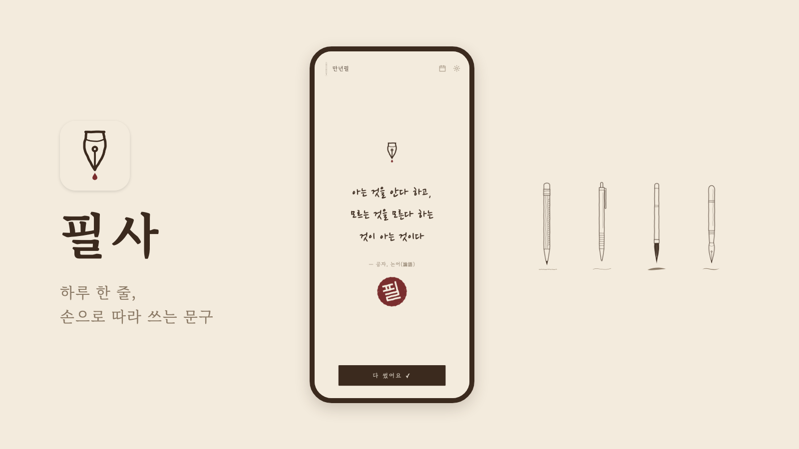
하루 한 줄, 손으로 따라 쓰는 문구
정한 시간에 한 줄이 와요. 종이와 펜을 꺼내 천천히 따라 쓰고, 「다 썼어요」 를 누르면 그날에 도장이 찍혀요.
필사 받기무료 · 광고 없음 · 안드로이드
쓰는 도구를 고르면 문구가 그 펜의 손글씨와 종이로 바뀌어요. 연필은 갱지 위 흑연 결로, 볼펜은 줄 노트 위 잉크 뭉침으로, 붓펜은 한지 위 먹 농담으로, 만년필은 양피지 위 잉크가 고인 획 끝으로.
영어 원문은 문구 화면 위 「가 | Aa」 로 한글 손글씨와 원문 글씨체(연필 · 볼펜 · 만년필 필기체) 중에 골라 써요. 펜마다 쥐는 법은 설정 → 「펜 사용법 다시 보기」 에서 언제든 다시 볼 수 있어요.
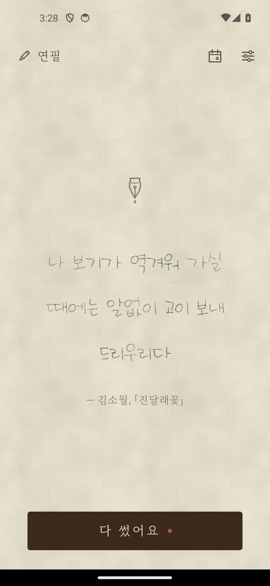
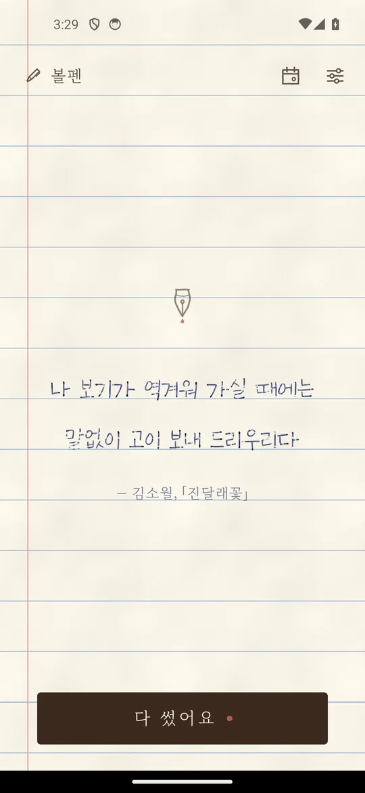
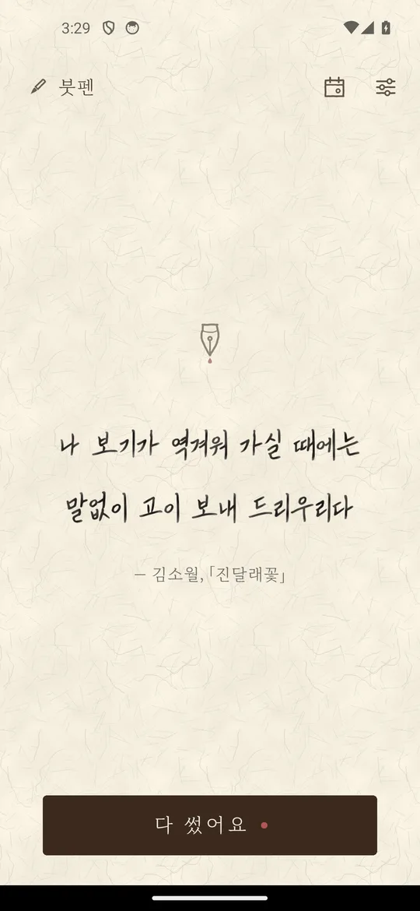
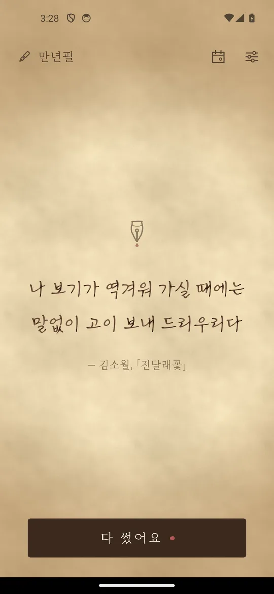
죽는 날까지 하늘을 우러러 한 점 부끄럼이 없기를— 윤동주, 「서시」
김소월 · 윤동주 · 한용운 · 이육사 · 이상화 · 이장희 · 김영랑의 시, 이상의 소설, 황진이 · 정몽주 · 윤선도 들의 옛 시조, 한시와 한문 고전에서 짧은 한두 줄을 골랐어요. 바쇼의 하이쿠 · 셰익스피어 같은 일본어 · 영어 명언은 원문 그대로 따라 쓸 수 있어요. 모두 1,093줄, 작가 사후 70년이 지난 글이에요.
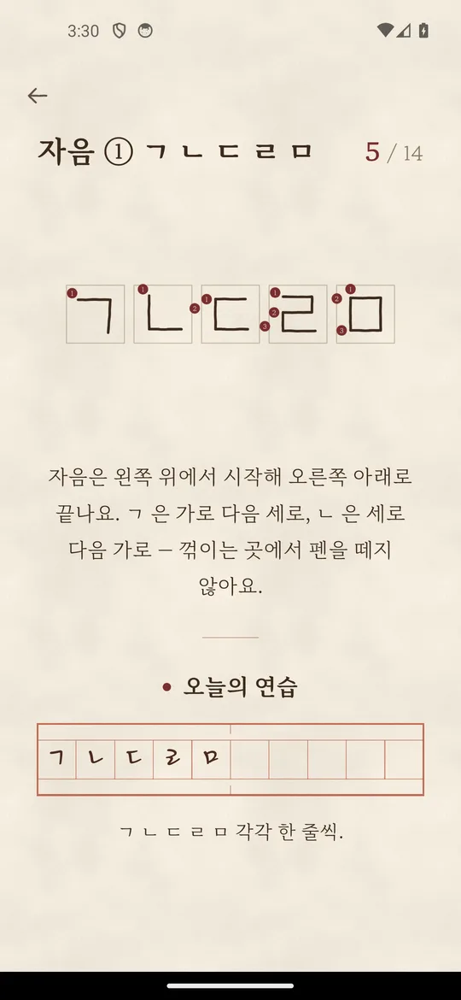
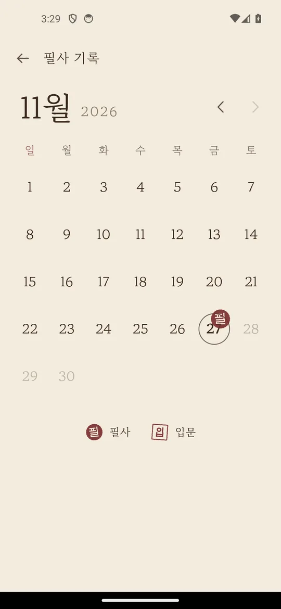
만년필 알기 · 쥐는 법부터 직선 · 곡선, 자음 · 모음, 가나다라, 원고지 칸 맞추기까지 하루 한 과. 14과를 마치면 첫 필사로 이어져요. 바로 쓰고 싶다면 건너뛰어도 돼요.
다 쓴 종이는 사진으로 남겨 그날 기록에서 다시 봐요. 이어 쓰면 새 잉크와 종이가 열리고, 7 · 14 · 21 · 28일을 채우면 도장첩에 배지가 찍혀요. 바쁜 날은 「쉬어 가기」 로 이어 가고, 한 작가 · 한 주제를 며칠 따라 쓰는 테마 시리즈도 있어요. 쓴 문구는 이미지로 만들어 나눌 수 있어요.
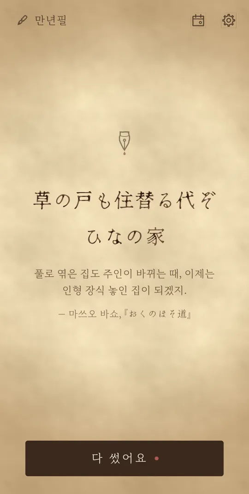
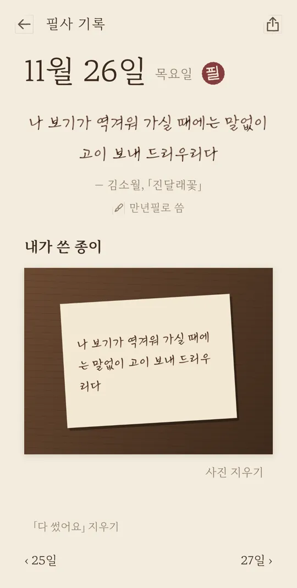
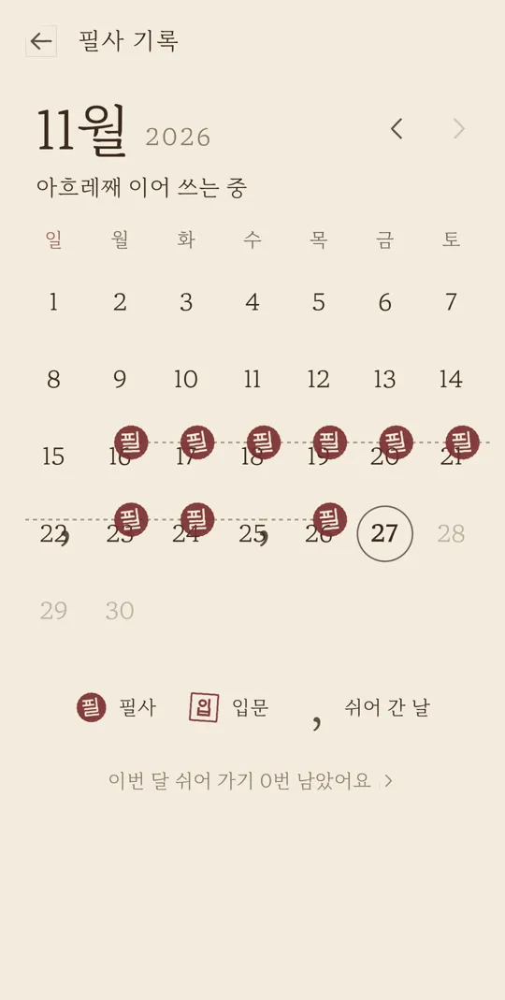
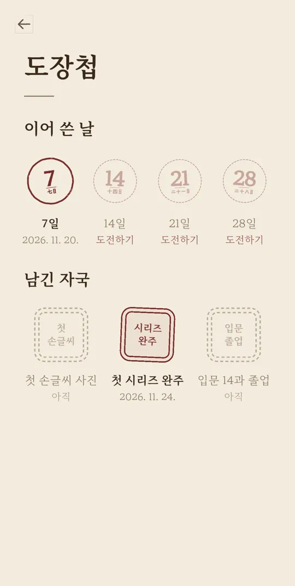
마음에 남은 문장을 직접 넣어 따라 써요. 책 쪽을 찍으면 휴대폰 안에서 글자를 읽어, 문장을 눌러 골라 넣을 수 있어요(한국어 · 일본어 · 영어). 다 쓴 뒤 서재에서 한 줄을 더 골라 쓰고, 오늘 문구가 마음에 안 들면 하루 한 번 다른 문구로 바꿀 수 있어요.
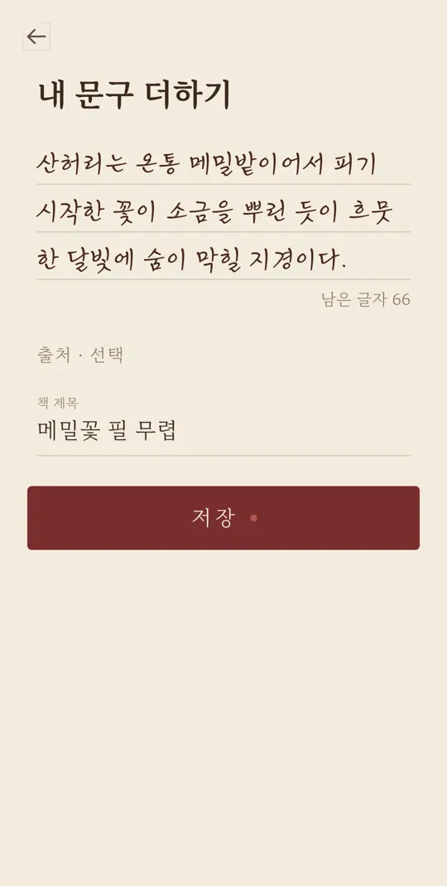
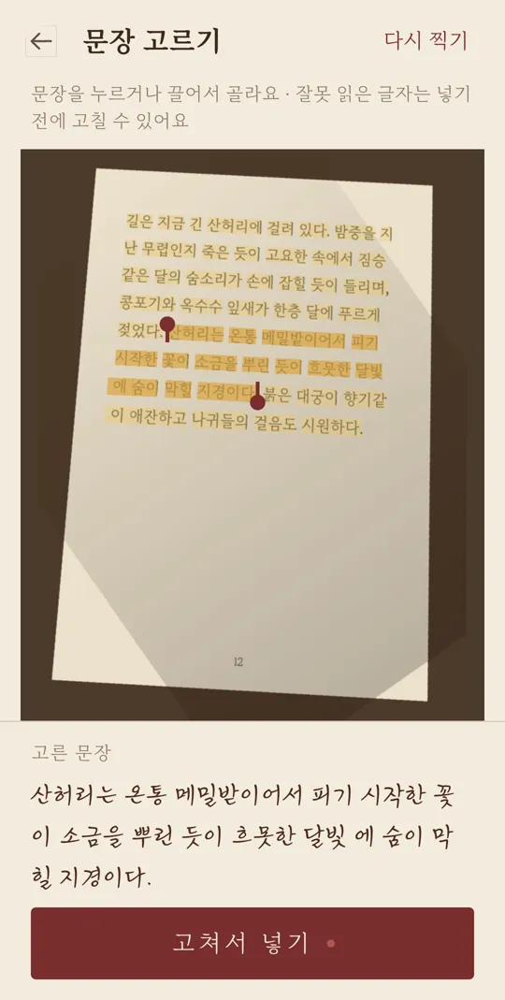
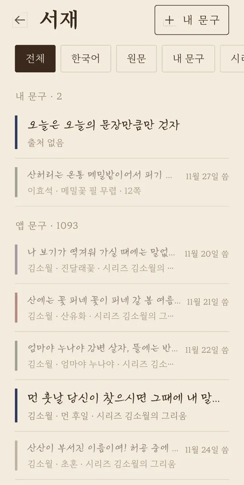
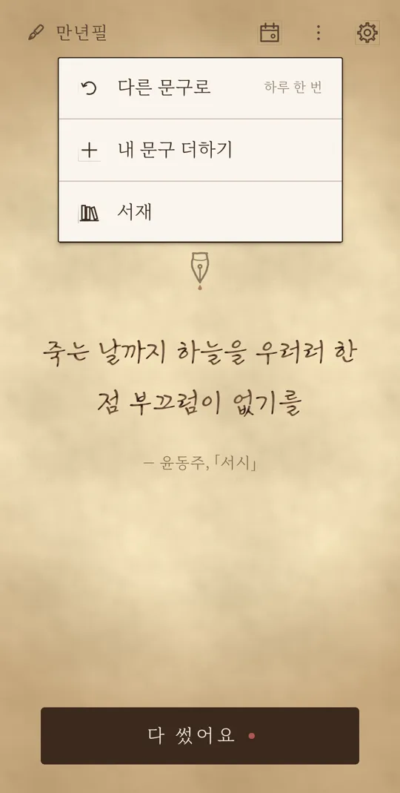
pilsa-x.y.apk 를 받아요.안드로이드 7.0 이상. 받은 파일이 맞는지는 릴리즈 페이지의 SHA-256 과 비교해 볼 수 있어요.
쓴 날 · 고른 펜 · 알림 시간 · 내 문구 · 손글씨 사진은 모두 이 휴대폰에만 남아요. 회원가입도, 운영 서버도 없어요. 책 사진의 글자도 휴대폰 안에서 읽어요. 밖으로 나가는 건 새 버전 확인 · 받기, 켤 때만 받는 일본어 글꼴(GitHub), 글자 인식 도구(Google ML Kit)의 진단 · 사용 통계예요.
오늘의 한 줄,
펜을 꺼내 볼까요?